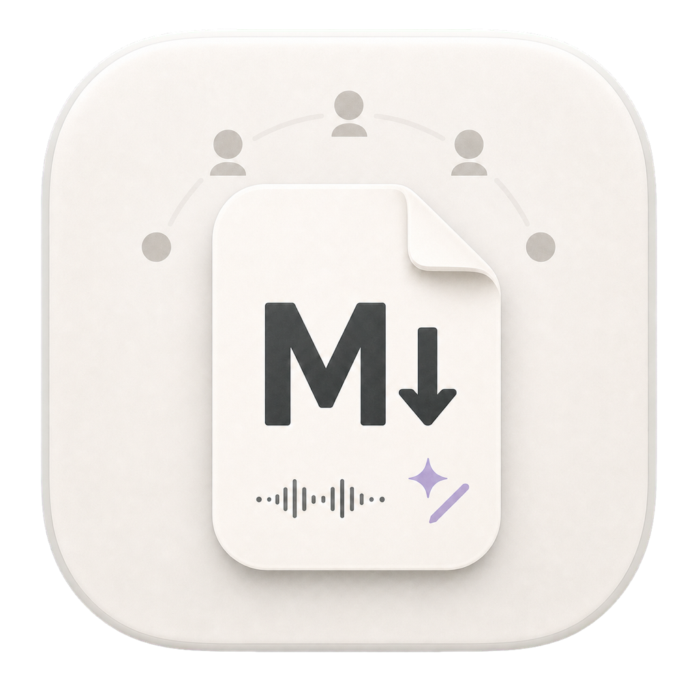

md-ai-editor assembles a seven-person expert panel to argue about your most contestable claims — then writes the verdicts into the file, where Claude can read them and revise.
v0.2.0 · Free and open source · Apple Silicon · Bring your own OpenRouter key
This build is signed but not yet notarized, so macOS warns on first open — right-click the app → Open → Open. One time only.
Essays, reviewed by a panel, edited with Claude.
It agrees with you, and it lives somewhere your document doesn't. You get a chat window full of encouragement, then copy fragments back and forth by hand until the thread scrolls away and none of it is in your draft.
md-ai-editor fixes both. The critique is adversarial by construction, and it's stored in the markdown file itself.
Adversarial review
Open a document and the panel is designed for that document: an industry operator with skin in the game, a thought leader, an investor evaluating with their own money, an academic who wants evidence, a hands-on practitioner, and two wildcards chosen for the piece — a skeptical enterprise buyer, a regulator, a journalist.
It then quotes your 3–5 most contestable passages verbatim and assigns each one to the panelists most likely to clash over it. Two rounds of debate, every persona a separate agent with its own system prompt and optionally its own model. All the debates run at once. A neutral moderator closes each thread with where the panel landed and one concrete edit.
You can review and regenerate the panel before it runs, and swap models per agent.
Agent-readable
Every comment is CriticMarkup, written into the markdown:
The market for this is obviously enormous{>>[@panel 2026-07-30]
Sarah Chen: "obviously" is doing all the work here — no TAM, no
bottom-up estimate. Cite one or cut the sentence.<<}
No sidecar file. No database. No export step. The comment travels with the document, so when you hand the file to Claude Code it sees exactly what was flagged and why — including the instructions you leave yourself: select a passage and queue @claude rewrite: tighten this and lead with the claim, or @panel a question for the next review round.
Claude revises the file. The editor is watching it on disk, so the revision just appears — preview and reading transcript rebuilt around it.
On-device voice
Read mode reads the rendered document aloud in a neural voice, sentence by sentence, and leaves the mic hot the whole time. Start talking and it pauses mid-sentence, transcribes what you said, and saves it as a comment anchored to the sentence you were listening to — then picks up exactly where it left off. No button to press.
Kokoro-82M for speech, Whisper for transcription, both running locally through transformers.js. Downloaded once, cached, offline after that. Your voice never leaves the machine.
Click any sentence to start reading from there.
Drop a comment on an exact point in the rendered text.
Highlight a passage, then type or speak the note.
Version control
Files live in a git repository — the editor insists on it, and offers to git init if you're outside one. Edits autosave, then auto-commit after twelve seconds of idle with a generated message, so you never lose a draft you didn't think to save.
History shows every revision touching the file, tagged with where it came from: edited by Claude, after review round 2. Diff against the last commit. Restore any earlier version into the editor.
Privacy
Speech synthesis and transcription run on your machine. No audio is uploaded and no key is needed. Models download once, then work offline.
The panel calls your OpenRouter account. The key is stored in the app's userData and only ever used from the main process — the renderer never sees it.
Your documents are files in your git repo. There is no sync, no sign-in, and no server.
No. It doesn't write your document. It criticizes it, and it makes the criticism legible to a coding agent that can revise it.
No, and that's deliberate. It leaves instructions and comments inline, then watches the file. You run Claude Code (or any agent) against the repo; edits show up in the editor as they happen. The editor's job is to be the best possible input and output surface for that loop.
Whatever you point it at through OpenRouter — the model catalog with pricing and context lengths is listed in-app. You can assign different models to different personas, so the panel argues across model families.
Because the whole point is letting an agent revise your prose. That's only safe if every revision is recoverable and attributable. Auto-commit means it always is.
No. Read-aloud and dictation are entirely on-device.
Only to OpenRouter, only when you run the panel, and only the document (truncated to 24k characters) plus the passages under debate.
The app is free and MIT licensed. You pay OpenRouter for panel runs — a review is a few dozen short completions.
No linking, no graph, no vault. It's a single-document review tool.